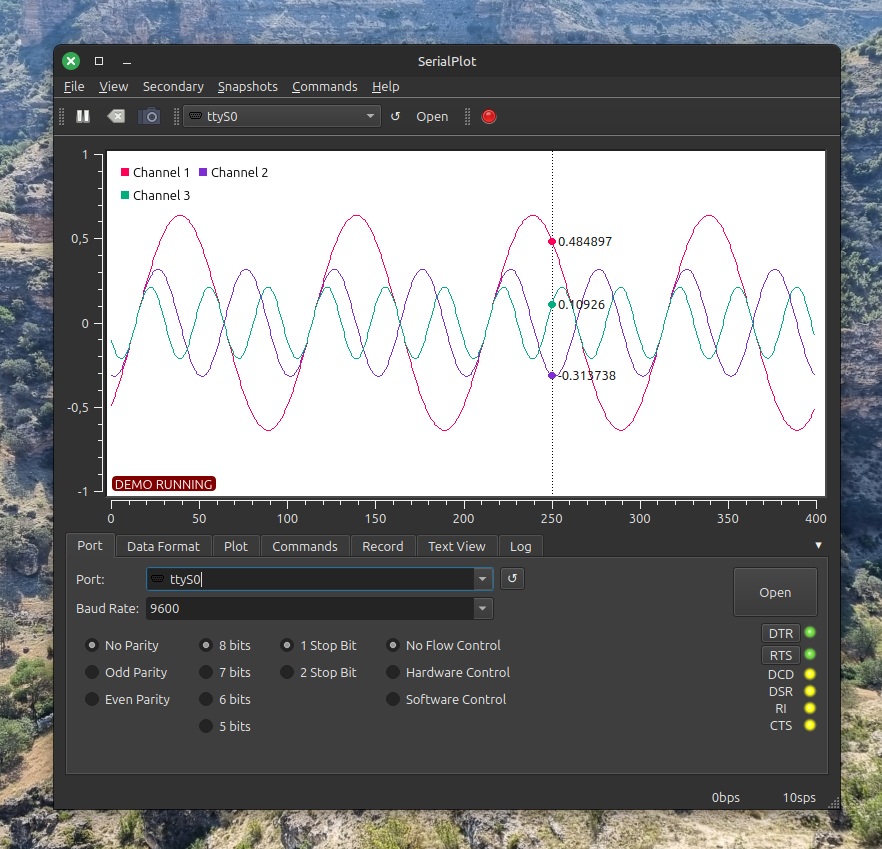
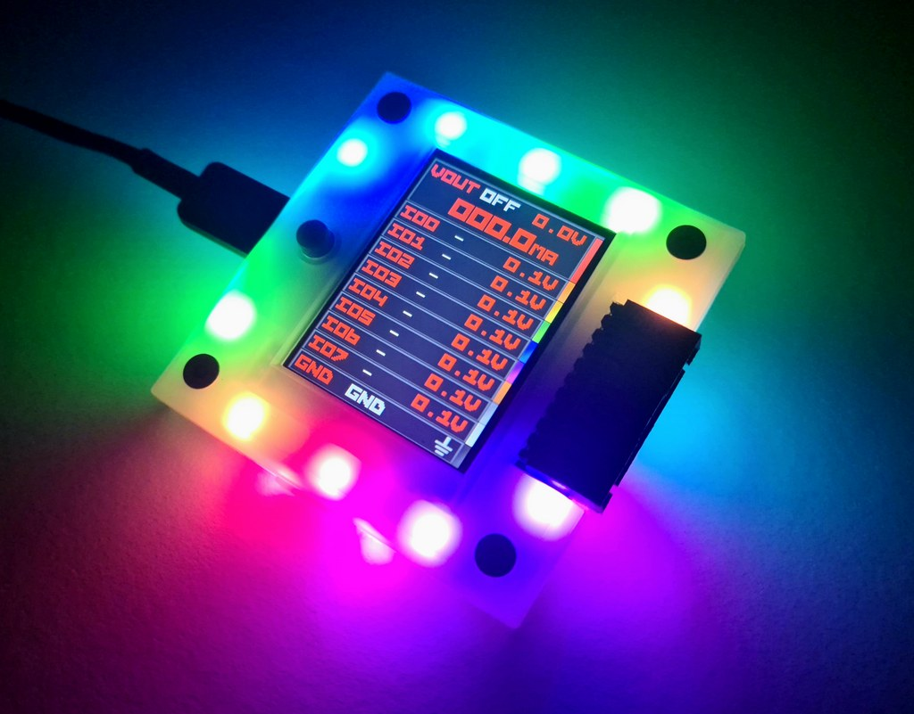
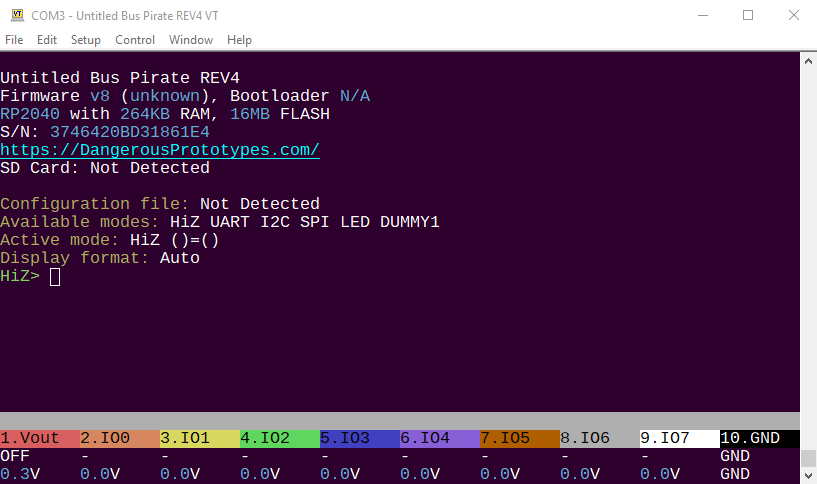
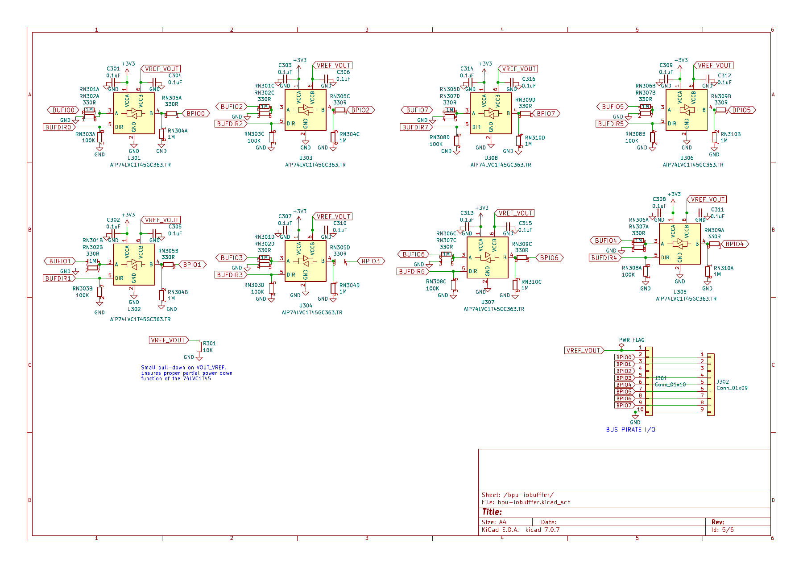
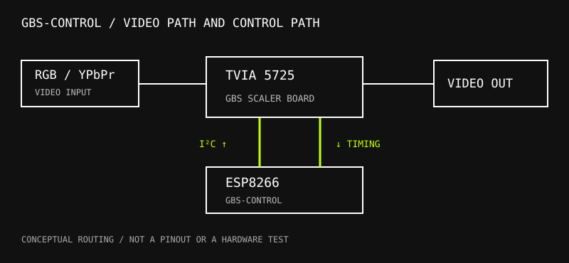
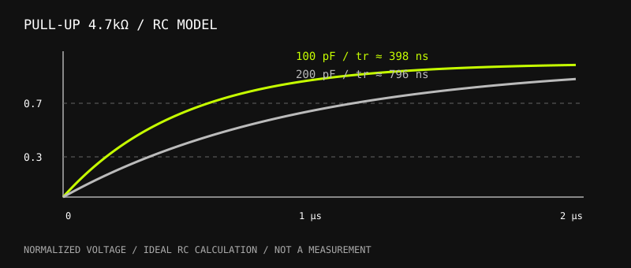
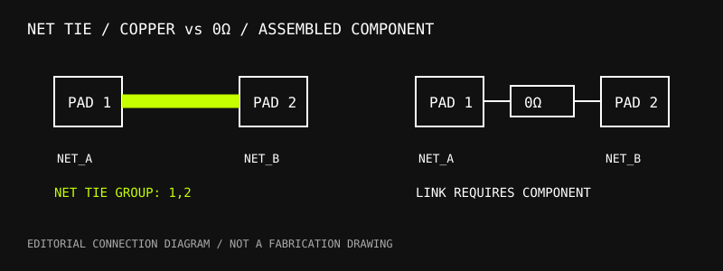
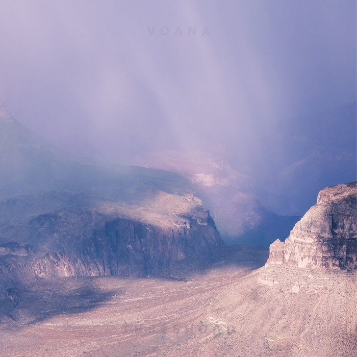
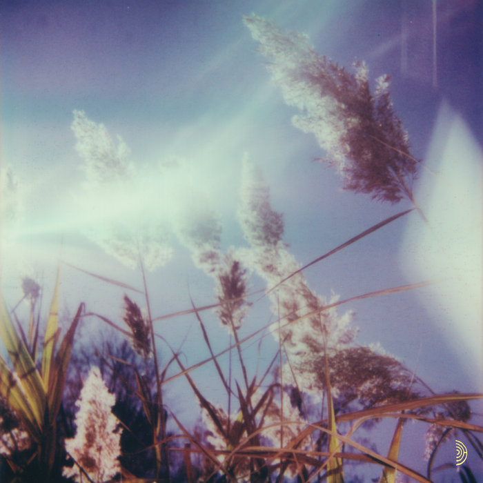
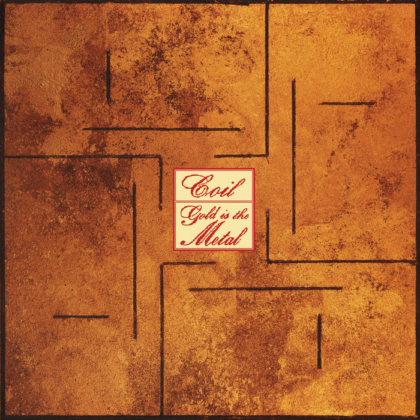

03 / SERIAL DATA
SerialPlot：让多列串口数据对齐
SerialPlot 从串口读取数据并实时绘图，支持逗号分隔的 ASCII，以及若干整数、浮点二进制格式，还能保存波形快照到 CSV。对开发板上的传感器或慢变化模拟量，先约定一行包含哪些通道，比边打印边猜每个数值的含义更有效。
若用二进制格式，要同时核对数据类型、字节序和帧边界。串口收到数据的间隔，也不必等于 ADC 真实采样间隔；图看起来平滑，不能单凭这一点给它贴上示波器的带宽或精度指标。


Bus Pirate 5 Rev10 项目原图 / 封面灰度显示
MORNING FREQUENCY / 晨刊
2026.11.19 · THU · ISSUE 003
Bus Pirate 的电平域与 GBS-Control 的控制路径。
工程软件、上拉电阻、Net tie，
以及 PicoCart64 与 Agnes Martin。
能发送命令，未必已弄清接口的电压；换了固件，也未必换掉视频处理芯片。今天从两份开源工程读起，再看串口数据、设计差异、元件库存与两则 PCB 笔记。项目按具体版本选读，唱片与历史作品另列日期。
它让电脑通过终端与常见总线器件交互。更值得读的部分，是 RP2040 与外部排针之间并没有画一条直通线。
Bus Pirate 5 的 RP2040 负责运行固件，终端命令可转换为 I²C、SPI、UART 等操作。Rev10 项目配有屏幕和状态栏，用来显示引脚功能、电压与电源电流。它适合在编写完整驱动之前，先认清一个器件怎样接受命令、返回哪些字节；协议支持范围与具体命令仍以对应固件文档为准。

当前 Rev10 规格页列出 8 个带缓冲的 IO，工作范围为 1.65–5 V；可编程电源的输出范围则是 1–5 V。这两个下限不同，不能因为电源能设成 1 V，就认定外部信号接口在同样的电压下也有相同保证。项目 README 中还有不同的 IO 范围表述，阅读时应落到具体硬件版本与对应规格页。
| 问题 | 图上找什么 | 为什么要分开 |
|---|---|---|
| 电平来自哪里 | +3V3 与 VREF_VOUT | MCU 域与外部接口域不同 |
| 谁在驱动 | BUFIO、BUFDIR 与收发器 | 方向决定信号往哪边传 |
| 空闲时如何保持 | 偏置、上拉与电压采样路径 | 读到高电平不等于有器件主动推高 |

这张图里，LVC1T45 类器件的两侧分别接固定 3.3 V 域与 VREF_VOUT。外部引脚的电平适配由接口电路参与完成，而不是靠一行固件把 RP2040 自身的 GPIO 改成任意电压。图上的方向控制、串联电阻和下拉也各有位置，不能只凭排针编号理解整条通路。
接着看完整图纸，还能追到电源限流、外设扩展与测量复用等部分。对自己的开发板原型，也可借用这个阅读顺序：先写出被测器件的电源与逻辑域，再决定连接方向、驱动方式和观测点。Bus Pirate 提供的是一个具体工程案例，不是一张可套用到所有目标板的接线表。
作者硬件仓库 ↗Rev10 规格页 ↗IO 原理图源码 ↗硬件资料选读；本刊未进行上板测试。
这项改装保留视频缩放板，改变的是它怎样被配置和管理。理解控制路径，才能判断一块小控制板到底做了什么。
GBS-Control 面向 Tvia Trueview5725 系列缩放器／视频转换板。项目利用 ESP8266 和 Arduino 平台，经 I²C 接管控制；RGB、RGBS 或分量视频仍进入原来的缩放芯片，输出处理也在那条视频路径中完成。ESP8266 的 Wi-Fi 还可提供浏览器控制界面，但它并没有在这里成为一块替代整套视频处理的显卡。

作者硬件指南要求停用板上原控制器，让 ESP8266 接手，而不只是把两根 I²C 线并上去。另有一条 DebugPin 时序观测线，用来支持自动画面位置和时序调整；它与配置寄存器的 I²C 通路承担不同工作。不同 ESP8266 开发板对引脚的标名也不统一，原文专门提醒按板型核对。
这让“改装经验”有了可追踪的内容：配置通道、原控制器归属和时序观测，是三个分别要确认的问题。项目 README 将运动自适应去隔行和 240p／480i 切换等列作功能；这里按作者说明介绍，没有把它们改写成本刊测得的延迟或兼容性结果。
继续阅读可以先挑一种实际输入格式，列出同步方式、输入电平、输出目标和板型，再看对应的设置与改装说明。用这一组条件去看对应设置，才能判断调整解决的是同步、供电还是控制器接管。
固件与功能说明 ↗作者硬件接管指南与实拍 ↗软件设置说明 ↗本期为资料与结构阅读，未进行主机兼容性测试。
03 / SERIAL DATA
SerialPlot 从串口读取数据并实时绘图，支持逗号分隔的 ASCII，以及若干整数、浮点二进制格式，还能保存波形快照到 CSV。对开发板上的传感器或慢变化模拟量，先约定一行包含哪些通道，比边打印边猜每个数值的含义更有效。
若用二进制格式，要同时核对数据类型、字节序和帧边界。串口收到数据的间隔，也不必等于 ADC 真实采样间隔；图看起来平滑，不能单凭这一点给它贴上示波器的带宽或精度指标。

04 / PCB & SCHEMATIC DIFF
KiDiff 比较两份 KiCad PCB 或原理图，导出显示变化的 PDF。PCB 按层绘制后比较图像，原理图使用相应导出流程；它适合回答“这次具体移动、增删了哪里”，尤其是给没有同一套编辑环境的协作者看。
阅读差异时，把关注点缩到接口位置、网名、封装与电源通路。渲染出来的变化不等于电气正确性判断；安装前也要对照项目的 KiCad、KiAuto 与图像工具依赖。先保留可追溯的两个版本，才能解释差异来自设计还是转换过程。
05 / PARTS & PROJECTS
Part-DB 是可自行部署的电子元件库存系统，记录类别、封装、制造商、储存位置与附件，也可关联项目 BOM。对反复做板的人，库存记录的价值在于把“型号、封装、数量与位置”放在一起，避免只知道某个阻值却不知道有没有合适尺寸。
项目支持从 KiCad 导入 BOM、条码标签和较细的权限管理。可以先看原项目演示，判断自己的元件量是否值得维护一套系统；录入时分清库存实物、替代料与图纸上的理想型号，不能让相同显示名称掩盖额定值或封装差异。
开漏输出释放总线后，上升过程由上拉电阻与总线电容共同决定。TI 的计算笔记用 30% 到 70% 电平之间的时间表示上升时间：tᵣ ≈ 0.8473 × Rₚ × Cᵦ。电阻相同，连接更多器件或增加线缆电容，边沿就可能变慢。

以假设的 4.7 kΩ、100 pF 计算，结果约 398 ns；它已超过 Fast-mode 的 300 ns 上限，而 Standard-mode 对应上限是 1000 ns。这里仅比较上升时间，不代表已经完成一条总线的验收。
电阻也不能无限减小：低电平时，器件要灌入更大电流，最小阻值还受允许的低电平电压与灌电流限制。若几个模块都自带上拉，先算并联后的等效值，再把测得的边沿与所用模式比较。
TI SLVA689A / I²C Bus Pullup Resistor Calculation ↗作者 Rajan Arora，文档修订为 2026 年 10 月；公式计算与硬件测量分开。
KiCad 的 net tie 让两个逻辑网络在指定封装中的一片连续铜上连接。各网络仍有自己的焊盘；把允许短接的焊盘编号写进 net tie group，例如 1,2，连接意图就保存在封装定义中。

0Ω 电阻则是实际装配的元件；如果不装，这一对分开的焊盘不会因为原理图里写了“0Ω”就自动导通。想保留可拆的测量或配置位置，与想在铜上表达指定连接点，是不同的设计选择。
这里先用 NET_A／NET_B 讨论工具机制。是否在某处连接不同地或电源域，需要回到具体电流回路与器件要求；net tie 是表达连接的方法，本身不证明一种电源或接地拓扑合理。
KiCad 9.0 PCB Editor / Creating net ties ↗不同版本的属性页位置可能变化，以对应版本手册为准。
kbeckmann 的 PicoCart64 是基于 RP2040 的 N64 开发卡带项目。README 区分 v1 lite、使用 RP2040 Stamp 的 v1，以及仍在开发中的双 RP2040 v2。本条只读 v1 lite 的制作要求，不把后续版本的容量与功能套过来。
文档首先强调板厚 1.2 mm，并提醒卡边倒角与金手指工艺。它们决定与主机连接器的机械配合，不能等到板子到手以后才由软件补救。这里的具体尺寸属于这个版本的项目要求，并非所有卡带 PCB 的通用规范。
另一个边界来自存储：原版 Raspberry Pi Pico 板载 2 MB Flash，允许使用的 ROM 大小受它限制。项目网页可能生成超过容量的编程文件，所以“工具生成成功”和“文件适合这块板”要分别核对。换用更大 Flash 的兼容板，README 还要求处理对应跳线，不能只按外形互换。
适合继续做的一件小事，是在下单前把板厚、卡边加工、控制板型号、Flash 容量与目标固件版本列成一张表，再逐项回指原文件。这个项目同时把机械、电气和存储约束摆在面前，比只看一张完成后的卡带照片更能看懂制作取舍。
作者 README 与版本说明 ↗v1 lite 硬件文件 ↗开发项目选读；本刊未制作或在 N64 上测试。
MoMA 把《On a Clear Day》记录为一套三十张的版画。每张纸尺寸接近，具体画面尺寸却分别记录；只看组套缩略图，很容易跳过这层关系。读一件系列作品，可以先把两张放在一起比较画面结构与留白，再回到整套的观看顺序。
资料卡还列出纽约 Parasol Press 为出版者、斯图加特 Edition Domberger 为印刷者。这些名字把作品引向另一条阅读线索：艺术家的构想怎样经过工作坊与出版形成一套可被保存、翻阅和成组观看的印刷品。标题相同、纸张接近，不表示每一张只是在重复前一张。
作品、材质与尺寸依据 MoMA。馆藏原图本次未能缓存，作品图与子记录请由原页查看；本站不生成替代作品。

VOLNA
VOLNA / 自行发行
2026.11.10 发行
九首曲目录于 2025 年 7 月至 2026 年 9 月，每首都是现场即兴与声音实验。Andrey Fedoseev 以吉他纹理与循环展开首张实验环境专辑，母带由 Taylor Deupree 完成。

Benoît Pioulard
Disques d’Honoré / BHP-10
回听 / 2025.07.11 发行
录于 2024 年 8 月，材料包括吉他、Moog、磁带、微型卡带与田野录音。Stanza 系列从日常等长即兴出发；本作由 Rafael Anton Irisarri 完成母带，延续声音日记的制作方法。

Coil
Mute / The Grey Area
再版 / 2026.10.30 · 原作 1987
1987 年作品的重制再版，由原成员 Stephen Thrower 参与指导。发行页提到实地录音与故障 Fairlight 采样器留下的材料；新版恢复原图像，并附新的内页说明。
各条资料依据对应发行页 About／Credits。HC 链接是公开导读，不将付费全文视为已读乐评。